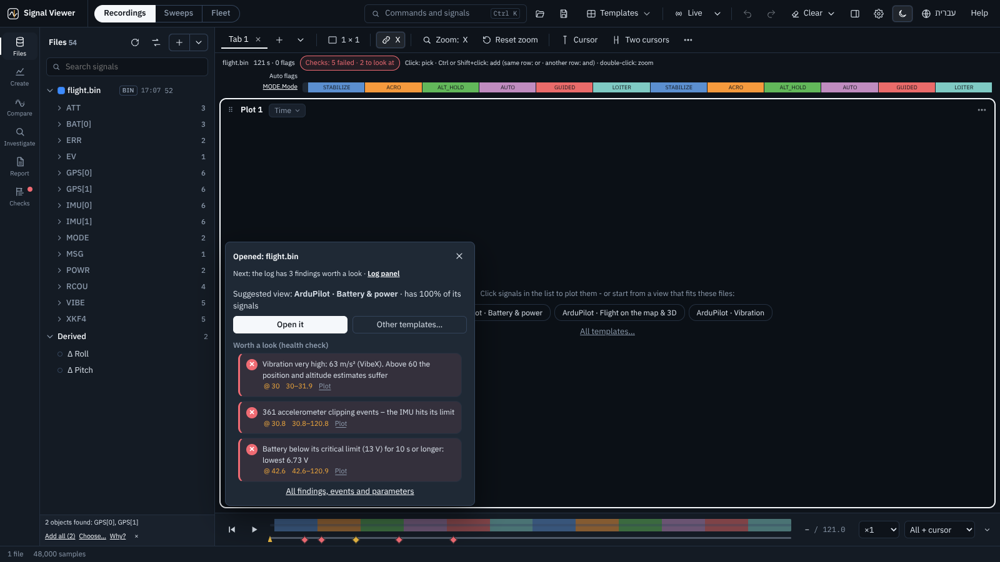
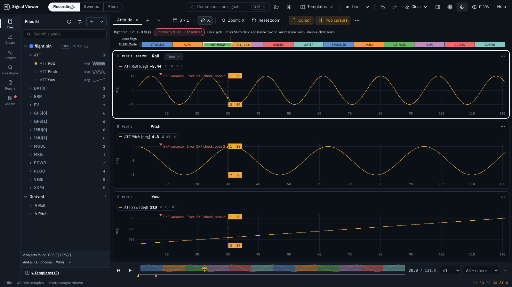
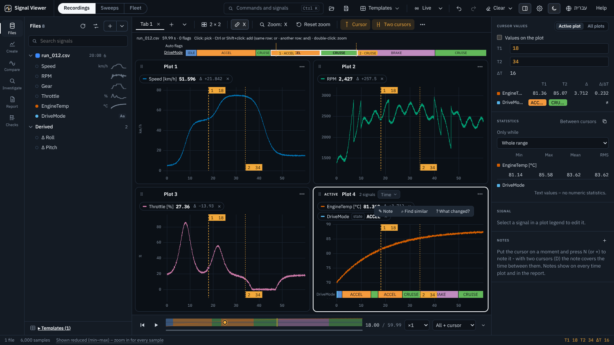
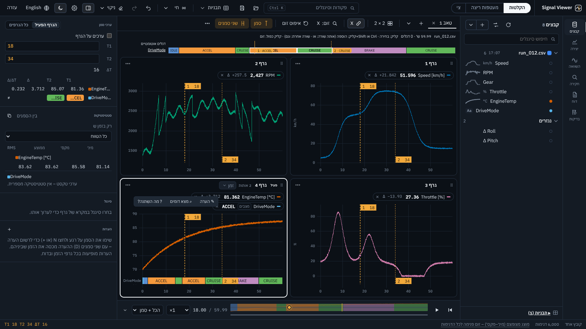
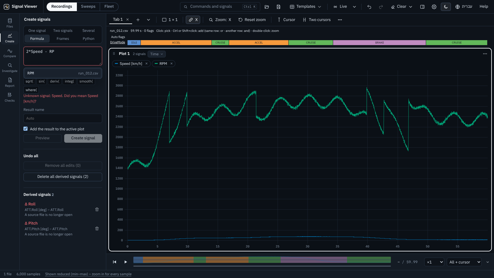
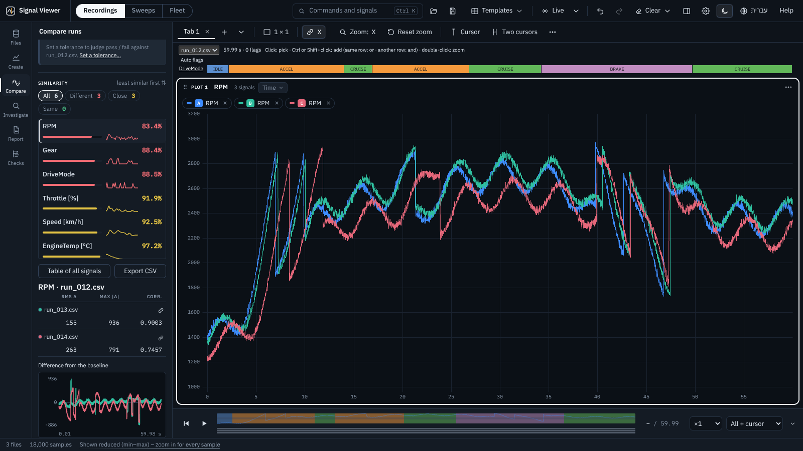
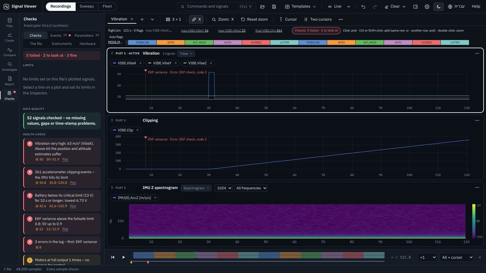
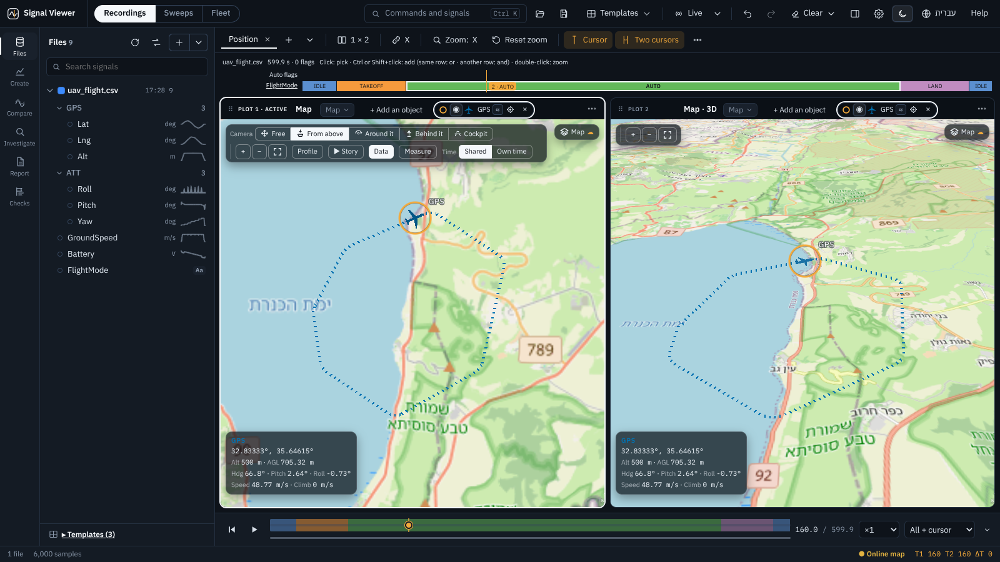
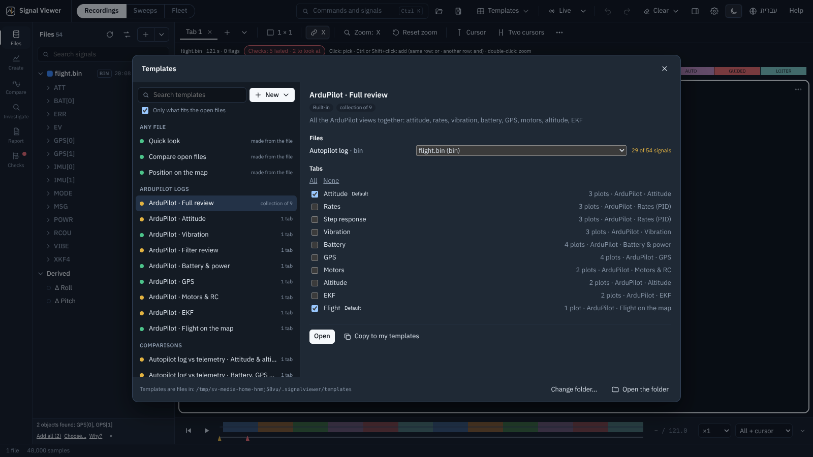

What works¶
Every feature, area by area. Each one is covered by an automated test that drives the real UI
(tests/e2e/), next to the backend tests, the numerical validation and the
checks on logs from real vehicles. New to the app? Start with the
user guide.
Opening files¶

Welcome screen¶
- Recent files and recent sessions, one click to reopen; missing ones are marked and can be forgotten
- Five examples in one click: a drone flight, the same mission flown twice, three car runs to compare, an ArduPilot flight log, a simulation against its flight (offered only when all their files are there)
- An example opens with its view already applied (Undo: an empty plot)
Files¶
- The file dialog sorts by last modified (newest first, the default) or by name, with a date column
- A file dragged in opens from its original (desktop window: the real path; otherwise found by name + size + modified time, one exact match only), so refresh and live mode follow it; only when it cannot be found is a copy used (marked "copy", with Choose the original file…)
- CSV (auto-detect delimiter/header/time column, Excel BOM, text columns skipped, unsorted time sorted) and MATLAB .mat v5 / v7.3
- Built-in file browser
- Drag & drop onto the window
- Import options with live preview
- Load report after opening (what was skipped and why)
- Rename, description, reload, replace with another file (plots keep their signals)
- Time offset per file (badge in the list)
- Link plots: a signal is added to and removed from the plot together with the same signal of every other file - signals made from it too (toggle in the file panel, saved with the workspace)
- Link operations, on its own: a change on a signal (ƒ) - set, stacked or removed - or a new signal made from it (Create signals, Create signal ▸) is made on the same signal of every other file; with Link plots on, the new ones join the original's plots (toggle in the file panel, saved with the workspace)
- Opening a file does not plot anything until you choose
- Damaged files (cut off by a power loss, bad bytes, a block of zeros) open with what is still readable, with a note; a
.matcut off while MATLAB saved it keeps every complete variable - In the file dialog Shift+click selects a range and Ctrl+A every file shown; each use (open files, save a session, a report, an image) keeps its own last folder, and a first save starts where the data is
- Opening a file that is already open reads it again from the disk (Open another copy on request)
- Several files opened together: the start card suggests Compare open files
- The timeline maps the recording: the active plot's first line drawn faintly along it, and what the plots show as a window on it - drag it to move along the recording, pull an edge to zoom, double-click it for everything; Backspace undoes a move (1.25)
- A flight log's health check findings, once the view is open, wait beside the timeline as N to look at (they no longer cover a plot; a click opens the list, × puts it away) and each is a ◆ mark on the timeline - a click plots its signals in a new tab (findings close together: one mark, a list)
- New folder in the dialog (saving: straight into it); on a file or folder Rename (F2) and Delete (Del: asked, then to the recycle bin - Windows, macOS, the freedesktop trash on Linux); only in the user's own folders (home, data drives), never a file open in the app
- Places beside the folder: the folders of the open files, favourite folders (★ next to the path; drag to reorder), recent folders, home / Desktop / Documents / Downloads and the drives
- Ctrl+P: quick open of recent files and folders
- Time axis… (right-click a file): another column as the time (CSV / text, MAT, Parquet), its unit - ready conversions (ms / µs / ns / min / h → s, s → ms / µs / min) or any scale, a separate scale for columns with a time of their own - and the offset; checks before the change (goes up and down, repeats, missing values, gaps, the unit the name says) and what it changes (plots showing the column, new signals and edits computed against time, other open files); the same change on linked files; one Undo. Kept in the session, in refresh and in live mode
- Columns with a time column of their own (found by name: Speed + Speed_time, msg.roll + msg.time_boot_ms, or alternating time, Speed, time, RPM) are drawn against their own time – CSV / text, MAT, and a .tlog that is a text table (Import options to turn it off)
File list¶
- Every signal with its unit (kept apart from the name, never cut off), its sample rate (wider panel, and the tooltip with the number of samples) and a small picture of the whole signal (spikes included; only the rows on screen fetch theirs)
- Checkboxes only while signals are selected (Ctrl + click; Shift + click or Shift + drag for a range - each new press of Shift adds another range; select all of a search, or a group's own checkbox / Ctrl+click on the group for all of it): plot them (one undo step), change them (
x*8,sin(x),sin(x) + Speed– x is each of them in turn, Speed the one of its own file), or make new signals from them; a right-click on any selected signal offers the same for all of them. After an action the selection stays for the next one, and the next Ctrl / Shift + click starts a new selection; Esc clears it - While searching, files and groups of the results can still be closed and opened, or all at once (Collapse all / Expand all)
- A flight log with more than 40 signals lists its groups closed, except those with signals on the tab's plots (more than 200 signals: all closed); the template suggestions fold away once something is plotted (▸ Templates (3) opens them)
Import settings¶
- Settings chosen in Import options are remembered for that folder. Auto-detection still comes first; the remembered settings are used only when auto-detection does not recognise a file (so other files in the folder are never misread). A note says when they were used, with Forget
Opening from outside¶
- Open with in Explorer (the installer offers it for .bin, .tlog, .ulg, .mcap, .mat, .csv, .parquet, .h5 and makes .svsession sessions open with the app; your default programs stay as they are) and
SignalViewer file…on the command line: when the app is already running the files open in it (its window comes forward) instead of in a second app; several files chosen together end up in one app;--new-windowfor a separate one
Refresh & live¶
- Refresh all files (file panel ⟳, F5 / Ctrl+R): files unchanged on disk are not read again. Each file's row shows when the version on screen was saved to the disk (hover: when it was read); a file saved again since turns amber (↻) - only its date is checked, every few seconds - and a click or F5 reads it; the message after a refresh says per file whether it was read again (and when that version was saved) or not changed on the disk. Live: refreshes every file first, then once a second reads only what was added (CSV rows, .bin / .tlog messages; a MAT, ULog, MCAP, HDF5 or Parquet file is read again once it is quiet for a moment, and at least every 2 s while a program keeps saving it). A green dot marks files that are still being written; the status bar shows "2 of 5 updating". Settings (▾ next to Live): stop after N s without new data (10 s – 15 min, or never; default 1 min), new files in the same folders with the same name pattern (run_013.csv after run_012.csv, 00000043.BIN): ask / open automatically / ignore, follow last N seconds. Files opened during live mode are followed too. A time (cursor) at the end of the recording moves on with the newest data, so the values read at it and the objects on the map and in 3D show the latest state (live mode puts it there when it starts; a time moved back stays, End follows again); an object whose track ends a moment before the newest data holds its last state. Try it without a logger:
python tools/live_demo.pywrites an aircraft and a ship that keep moving
New runs, same work¶
- Replace the input files… (file panel, command palette) or Open a session with new files… (command palette, or the icon next to a recent session on the welcome screen): the same layout, formulas, edits (ƒ), axes and cursors with new input files
- For each file the newest file in the same folder with the same name pattern is suggested (run_012 → run_013), or choose any other
- Before opening, each new file is checked for the signals the work uses (missing ones are listed)
- Copy the work to another file… (right-click a file): a file already open, or one to open, gets that file's work, each part on its own - its changes (ƒ), the signals made from it (derived of derived too), its signals in the plots (on the same plots to compare, beside each plot in the same tab, in a copy of each tab that uses it, or not at all); the original stays as it is, and it can be repeated for more files. Suggests the open files and the newest file with the same name pattern, checks the target first, and can turn on Link plots and Link operations (each on its own) for what comes next
- A new signal made from two files belongs to one of them: the sources written with their file (
{run_b.csv:Speed}, in an expression of x or a Formula) and a Compare difference's baseline are kept (params.pinned), the others say whose it is - so Copy the work, Link operations and Clear this file handle it like any signal of that file. Signals of two files with no recorded intent are listed in the copy dialog, each made for the new file when ticked - Clear this file ▸ (right-click a file): its signals out of every plot, its changes (ƒ) undone, the signals made from it deleted - each on its own or all; the other files keep their work; one Undo
- Replacing the current files offers Back to the previous files
Start over¶
- Clear ▾ (the Recordings bar; Ctrl+K; the ⋯ above the plots: Clear all plots of this tab, and Back to the previous zoom): this tab's plots
- The other tabs
- All tabs (one empty tab)
- All tabs + notes + derived signals + in-place edits, the files stay open - each undone by the toast's Undo or Ctrl+Z
- Clear everything (with confirmation): closes all files too — files on disk are never touched
File formats¶

ArduPilot logs (.bin)¶
- DataFlash logs read directly (no pymavlink): about 50 MB/s
- Very large logs: one pass over the file on several cores without copying it into memory; above 64 MB the values stay in the file until a signal is used (a 16 M-sample signal is read in about 0.3 s) within a memory budget, and fields the log keeps as float32 stay float32 - a 1.2 GB log opens in about 7 s with under 0.5 GB of memory. Its index (time vectors and message positions) is kept in the cache: the same log opens again in a moment (about 0.03 s), only while it is unchanged
- Every message type keeps its own time (TimeUS), so IMU at 400 Hz and GPS at 5 Hz are not resampled onto each other
- Sensors with several instances split (
IMU[0].AccX,IMU[1].AccX) - Units and multipliers from the log's FMTU/UNIT/MULT (
GPS[0].Alt [m], cm → m) - Flight modes by name (Copter / Plane / Rover / Sub, detected from the log) and EV events by name
- Text fields (MSG…) as state signals
- PARM values and MSG texts in the load report
- Damaged blocks skipped (resync); what the damage made look like data is left out and counted in the note after opening - the message just before a damaged block, and an instance only the damage had (
IMU[149]next toIMU[0]/IMU[1]) - A faulty firmware's message type (1.26) - written with another length than its FMT, an FMT listing more or fewer column names than values, or no FMT at all - is found from the chain of messages, left out by name in the note, and everything else is read; only a log that is mostly damage (under 20 % readable) is refused
- Live mode reads only the newly written messages. Checked value-by-value against pymavlink. Test log generator:
python tools/make_test_bin.py out.bin [--live 30]
MAVLink telemetry (.tlog)¶
- What Mission Planner / QGroundControl / MAVProxy record from the radio link. Message definitions from pymavlink (ArduPilot dialect), decoded per message type with numpy (a 3.5 MB log in about 0.4 s; values identical to pymavlink). Units converted (degE7 → deg, mV → V, cm → m, cdeg → deg…), enums by name, flight mode by name (ArduPilot per vehicle type; PX4 main/sub modes), HEARTBEAT.armed; arrays per element, unused battery cells → empty; the ground station's own messages left out, other components / vehicles tagged (
ATTITUDE[c154].roll). Messages that carry the autopilot's clock (time_boot_ms, or time_usec when it is boot time) are placed at their own time, not at their receive time - no radio delay in them. Checks: STATUSTEXT with its real severity, mode changes, arm / disarm, PARAM_VALUE. Live mode reads only new packets
PX4 logs (.ulg)¶
- Read with pyulog: one signal per topic field (
vehicle_attitude.q[0],sensor_gps[1].…when a topic has several instances), each topic with its own time; navigation state and arming by name; topics without time stamps skipped (reported); a damaged log opens with what can be read - samples with a time stamp only damage can make (after the log's end, a lone one far out of step), damaged parameters and messages are left out and counted; Checks: logged messages by level, parameters with changes and defaults
ROS 2 / Foxglove (.mcap)¶
- Every numeric field of every topic becomes a signal (
imu/accel.vector.x), each topic on its own time (the recording time, seconds from the first message) - ROS 2 messages (CDR, decoded from the definitions stored in the file – no ROS installation needed) and JSON channels
- A ROS time (
header.stamp) becomes one value in seconds, text fields become states with their texts, true / false 1 / 0, short arrays one signal per element - Images, point clouds, maps and other bulk topics are not decoded, arrays over 16 values and byte blobs are left out, other encodings (protobuf…) named – all listed when the file opens
- A recording cut off by a crash opens with everything before the cut
Parquet (.parquet / .pq)¶
- Every numeric and true / false column; text and categorical columns become states
- The time: the column you choose, else the pandas index (date-times in seconds from the start), else a column named like a time, else the first date-time column; no time: sample numbers
- Columns of other types (lists, structs) are listed as left out
HDF5 (.h5 / .hdf5)¶
- Every numeric dataset (
sensors/imu/ax), each column of a matrix up to 16 columns (pos[0]…), each numeric field of a table (pandas / PyTables / records) - A group's own
time/t/timestampfor its signals, else the file's main time; signals with no time of their length are listed, a file with no time uses sample numbers - Damaged parts are skipped and counted, the rest opens
CAN¶
- Candump
.log, Vector.ascand CAN.csv(time, id, data) decoded with the.dbcfiles next to the log or in the readers folder: Intel / Motorola, signed, scale / offset, value names, float, multiplexed, 29-bit ids, CAN FD payloads; unknown ids counted - our own decoder (MIT)
Your own formats¶
- A Python file in the readers folder (
~/.signalviewer/readers) with@reader(extensions=[".kv"])returning the time and the signals: those files open like the built-in types (file dialog, drag & drop, Python, command line); re-read when saved; errors name the line; in the app a reader runs in a process of its own - one that crashes Python or never ends (SV_READER_TIMEOUT, default 600 s) is stopped and the app keeps working - Binary layouts (ICD): a
*.icd.jsonthere describes packets (sync, id, length, header time; fields with type, byte order, scale / offset, unit, bits, value names) and raw recordings open as<packet>.<field> [unit]- see Command line and formats
Text values¶
- A CSV column of text (
IDLE/ARMED/FLYING…) becomes a state signal with its texts (up to 1000 different; more → skipped, e.g. IDs). Shown as text everywhere: cursor, legend, hover, value axis. Live mode adds new texts as they appear. Sparse columns (blank cells) keep the last value. The cursor shows the value in force for states (never an interpolation)
Plots and the screen¶

Plots¶
- Tabs (rename, duplicate, close, close others, drag to reorder; many tabs: an All tabs list next to +, the active tab always in view, the mouse wheel scrolls them, Ctrl+PageUp / PageDown, Go to tab in the command palette)
- Any layout up to 9 plots (one layout button: the common ones, a grid picker or type rows × columns; drop a signal on a plot's right or bottom edge to split it)
- Shrinking the layout removes the extra plots (Undo)
- Drag the gaps between plots to resize
- Time / X-Y / FFT / Map per plot (longitude + latitude signals; wheel = zoom, drag = pan, double-click = fit; the Map background picker - online maps ☁, My maps, or the offline map that ships with the app – terrain shading and colour by height, water, rivers, roads and runways, place and airport names in Hebrew or English; detailed for Israel and its surroundings (elevation ~130 m, roads down to regional roads, villages), the rest of the world coarser; it also fills in for online tiles that cannot be had without internet)
- Objects on the map: an aircraft, UAV, drone, missile, ship or vehicle whose latitude / longitude (and altitude, heading, pitch, roll) come from signals – from any open files, filled in from their names (GPS.Lat / Lng / Alt, ATT.Yaw…; MAVLink 1e7 degrees handled) – chosen by typing their names, each with the unit it is in and ƒ to change it on the spot (radians → degrees…) – drawn as an icon at the timeline's time, pointing along its heading or, without one, where it moves; its track follows the timeline's mode; Track colour: the object's own, by a state (the flight mode by itself, in the mode lane's colours) or by a value (a colour scale), with a key in the map's corner (3D too) - the plain track of the same position takes the object's colour; follow keeps it in the middle; edit / remove from its chip (Undo)
- 3D view (a plot mode): the earth with the bundled terrain and the same map tiles, the plot's objects as 3D models (aircraft, UAV, drone, missile, ship, vehicle) at the timeline's time with heading, pitch and roll, their tracks, names, and a readout (altitude, height above ground, attitude); altitude given above sea level, above the take-off point or above the ground; a bar to choose the object (its values in a data box that can be hidden: position, altitude, height above ground, heading, pitch, roll, ground speed, climb), the camera – general, or on the object (turning goes around it, zooming goes towards it) – and a second / third object: a dashed line to each with the distance, and in the box the horizontal distance, height difference, slant range and bearing (on the WGS84 ellipsoid); works with no internet (CesiumJS ships with the app, no Cesium ion); on a computer without graphics acceleration it switches to lighter settings and says so
- Own time: a 3D plot can leave the timeline and get its own bar, play and speed (the other plots keep the timeline's; framed so it shows), and go back
- Events: the log's errors, warnings and mode changes as marks on the tracks
- Measure: two clicks on the ground give the distance over the ground, straight and the height difference
- Image: the view as a PNG, at the screen's size or at twice it (for a report)
- Manual axis limits
- Link X and link Y (the plots of a column line up: the same moment is at the same place in each, whatever their units; an Envelope plot zooms with them)
- Drag-zoom, wheel-zoom, pan (Alt+drag or middle button), zoom history (Backspace)
- Min/max decimation that follows the zoom down to raw samples
- Clear plot / clear all (Undo)
Signals¶
- Virtualized list (thousands of signals)
- Grouping by name prefix; a big group (12 or more) nests again by the rest of the name (
IMU[0]▸Acc▸ …) - My groups: select signals ▸ right-click ▸ Group these / Add to a group ▸ New group…, named as you like;
/nests (Nav/IMUinsideNav). Above the files; drag signals onto a group; rename, take a signal out, remove the group (the signals stay), add the whole group to a plot. Any open file's signals and made signals; saved with the session; Ctrl+Z - A made signal (Create signals): Rename… (the plots, the groups and the signals made from it follow), Change the formula… and Delete (also the Delete key, also several) - what was made from it is asked about and deleted too; one Undo puts all of it back in every plot
- Smart search: substrings, letters in order (“spd” → Speed), one typo (“sepeed” → Speed); exact matches win
- Right-click: add, new plot, use as X, Create signal ▸ (derivative, integral, other operations… – Create signals opens with the signal chosen)
Legend names¶
- One data file → signal name only
- Several files → each file has a colour and a short tag (A, B… – rename it in File options, click it in the file list to change the colour): the legend, cursor values, statistics and signal pickers show the tag; the tooltip has the full name and path; the same signal from several files in one plot is coloured by file (Colour by file in the plot menu for all)
- Exports and reports name the file (“signal · file”), with as many parent folders as needed (“A/test.csv”, “x/A/test.csv”)
Legend place¶
- Statistics of the shown window (1.27; a plot's menu ▸ Legend): the lowest, mean and highest value of each line over the time on screen, beside it in the legend, recomputed with every pan and zoom - fast on signals of tens of millions of samples. The mean is the plain mean of the samples in the window, not weighted by time.
- A plot's menu ▸ Legend: Automatic (above while it fits in two rows, else a column beside the plot), Above the plot, Beside the plot, Hidden (a button says how many signals and shows it again)
- Beside the plot: a row per signal, the values in one aligned column, a filter above 8 signals, the width dragged (double-click: as it was)
- The values never move the legend: each keeps a place as wide as the widest it had, and the header does not get lower while the pointer is in the plot; the time under the pointer is in the plot's corner; a name that says its unit (
Roll [deg]) does not repeat it after the value - The pointer on an entry (above or beside) draws its line in front, the plot's others faint
- 20 colours for new lines
Legend chips¶
- Click: properties
- Ctrl+click: select several and edit them together (scale, offset, time offset, width, display, remove), change the signals themselves or make new signals from all of them (also on the right-click of a selected chip)
- Drag to reorder or to another plot (Ctrl: copy)
- Right-click: properties, states, states only (hide the line, keep the markers), move up/down, copy to new plot, use as X, Create signal ▸, remove
- Right-click: To the right axis – a second value axis with its own scale and unit for a signal in other units (offered when you add one); reports and images draw both axes
- A setpoint beside its measured value (DesRoll / Roll, RATE.RDes / RATE.R, roll_sp / roll,
<topic>_setpoint.x/<topic>.x; the words des, desired, dem, demand, cmd, command, commanded, sp, setpoint, set, target, tgt, ref, reference - before or after the name, with a separator or in camel case) is drawn dashed and a little faded, its swatch dashed; Inspector ▸ Line: Auto / Solid / Dashed (a choice by hand wins) - Plot the commanded / measured pairs (a file's menu in the signal list, for that file; Ctrl+K, for every open file): a new tab with a plot per pair - the measured value and its setpoint dashed - in one step (one Undo); a report of that tab holds them
- Line styles (since 1.24): solid, dashed, dotted, dash-dot (Inspector ▸ Line; in reports and saved pictures too); Settings ▸ New lines sets the width and style of every new line, Apply to all open plots gives them to the lines drawn (one Undo); Style the lines… in a group's menu (signal list) or Style these lines… for the legend selection: one colour or the palette, a width and a style for that group's lines in this plot, this tab or every tab (one Undo)
- Plots change places (since 1.24): drag a plot by its ⠿ onto another, Move to… in its menu, or Ctrl+Shift+arrows; the cells keep their sizes
- A plot goes to another tab or into another plot (since 1.25): Move to… lists the other tabs and New tab, or drop the plot on a tab's name (Ctrl: a copy) - it arrives as it is (lines, axes, cursors, a map's objects and pair); Add its lines to… (Shift+drop on a plot) joins a plot's lines to another of the same kind. One Undo each; a full tab refuses and says why
- One plot at a time (since 1.25): M or the layout button - the active plot fills the tab, 1 - 9 show the others, Esc returns; the layout is not changed
- A line that would look flat beside larger ones is offered To the right axis or To its own plot (since 1.25) - from the values, so files with no units are covered; nothing moves by itself
- The ⋯ button of a plot is always in the head's far corner (since 1.25), whatever the head holds
Plot menus¶
- The plot's type is one button with its name (Time ▾: Time, X-Y, XYZ, Map, 3D, FFT, Step response, Spectrogram, Envelope, Video); right-click in a plot: cursor here, second cursor here, note here, previous zoom, show everything, export data, save / copy image, axis limits, clear plot (the ⋯ button has the plot's part)
Top bar¶
- One top row, the same in every work area: the areas as one switch (Recordings · Sweeps), then the Recordings tools (no File menu, F35): open / save session, Templates ▾ (save a template, a new collection), Live ▾ (it follows the open files and MAVLink, so it is the Recordings area's), undo / redo, Clear ▾ (what to clear, see Start over) and the Inspector; Ctrl+K, Settings, day / night (one click), language and the Help menu. The plot tabs, with + (a new tab) and ▾ (the views menu: a new tab, a template or collection, the tabs a template left out), are in the stage bar above the plots (1.27: the plots gained 40 pixels of height) - opening files is in the file list (Ctrl+O), recent files Ctrl+P; Settings (theme, text size, time as seconds or a clock; kept between starts, not changed by sessions; the disk space the app uses for speed - CSV cache and log indexes, copies of files dropped into a browser, map tiles - each with its size and Clear; and the results kept in memory to be fast - changed and derived signals, spectra, plot summaries, statistics - with its limit,
SV_MEMCACHE_MB, default 1024) and Help menu (keyboard shortcuts, the examples, copy error details, about)
Zoom¶
- A drag zooms by its direction: nearly sideways = time, nearly up or down = values, diagonal = a box (no mode to set); for one drag Shift = values, Ctrl = always a box. The wheel zooms time (over the value axis, or with Shift: values)
- Wheel over the value axis zooms values only, over the time axis time only; Shift+wheel values only, Ctrl+wheel both, Alt+wheel time only
- Alt+drag pans (follows the mode)
- The wheel follows the size of the scroll (a trackpad zooms smoothly; a sideways swipe moves along the time) and one gesture is one step back
- Backspace undoes one zoom step of both axes
- R / double-click reset both
Timeline¶
- A bar under the plots for the whole recording (all open files, time offsets included); its handle is the cursor – drag or click it, arrows move 1 %, Home / End jump to the start / end
- A row per file showing when it has data, log errors / warnings and your notes as marks to jump to
- Play / pause (P) at × real time (×0.25 … ×60), a zoomed time plot follows the time
- The plots show all + cursor, up to the time (they draw themselves) or the last N seconds – time plots, X-Y plots (by each point's time), maps (the whole track faint, the part shown in full colour) and spectrograms
- Can be made small (a thin bar that still drags)
- Time written in seconds as recorded (the axes' number) or, in Settings, a clock from the start
- Saved in sessions
Video¶
- A plot in Video mode plays a local video (mp4, webm, mov…) with the timeline: moving the cursor moves the video, play plays both, and playing or seeking in the video moves the cursor
- Line up… then Lock here: put the video and the cursor on the same moment (take-off, a step) and they stay together (the offset can also be typed)
- Saved with the session, part of Undo
- "No video at this time" outside the clip
State display¶
- A state lane per signal: a coloured block per state with its text inside (same state = same colour everywhere). Lanes alone fill the plot one under the other with their names; next to lines they sit along the bottom and the value axis makes room. Stretches with too many changes to draw are hatched (zoom in). Text signals start as lanes; Line shows them as steps with the texts on the value axis
Shared state lanes¶
- The flight mode once per tab: when a tab's time plots share the time axis (X linked, one column, two or more), its shared lanes - the flight mode of the ArduPilot views - are not drawn in every plot (they get the height back) but once: in the overview strip above the plots when it shows that signal (its default row), else in a band right above the plots, lined up with their time axis and following the zoom. Cursors 1 / 2 and the pointer over a plot are lines on that row, and the state under each is outlined and named (1 · AUTO); in the band a click on a stretch puts the cursors on its edges, Shift+click zooms to it. A plot's ⋯ ▸ State lanes in this plot too shows them in that plot again.
- Conditions (rail ▸ Investigate): named, kept in the session; written with signal names like a formula plus
and/or/notand state texts (Mode == "AUTO"), looked for in every open file that has the signals (a file without them says which are missing); options: an exit condition (hysteresis), leave out stretches shorter than, join stretches closer than. The editor counts the stretches while you type (the change when editing: "6 → 4"), and when it never holds says the range of what it reads. Each condition: shown / hidden, its colour, its count (per file on hover), ⋯ edit, duplicate, And with / Or with another (combined, following its parts), delete (one undo; conditions combined from it go with it). Click the name or press]/[: the next / previous stretch, both cursors on it, the condition in focus. On the time plots: the condition in focus shaded over the whole height, the other shown ones thin strips along the top - The stretches of the condition in focus (Investigate panel): a table - file, start, length and the max / min / mean of a signal the condition reads, per stretch; sort by any column, a click zooms there with both cursors on it, Copy table. Together in a new tab: an "occurrences" plot - every stretch of the signal on top of each other, lined up at their start, end or peak (the dashed line), with the share of the longest stretch before and after, one colour per file, thin stretches and their mean bold (the first 200). What differs inside: every numeric signal of the files, ranked by how far its mean inside the stretches is from outside, in times its usual spread outside (↑ / ↓, outside → inside); a click opens it in a plot of its own (in every file it is in), Ctrl+click adds it to the active plot
- What changed first (What changed? on the selection bar): by default every signal of the event's file (the file whose signal is most unusual in the span - also signals on no plot), or the signals of the tab, or every signal of their files - each one's usual level and noise read well before the span (a signal already drifting steadily there - a straight line explains it much better than a level, a curve does not - is judged against that drift carried on) (max(span, 2 s), ending max(span, 1 s) before it, said in the panel), its first move beyond 4 times that noise for 3 samples in a row from there to the end of the span (a state: a new value) - a ranked list of candidates with a small picture each, ↑ / ↓ and how many times the noise, the time from the span's start and the sample rate; rows the rates cannot order are grouped "together" (measured from the group's first row), a group with its time range, closed / taken out at once, long groups 5 at a time; under each row, the same signal in the other open files at the same time (↑ 18× · −0.2 s, or no change); a filter by name; a row or group taken out (×) leaves the list and its dashed line the plots, bring them back; "N did not change" and "no data" apart; a warning that earlier is not proof of cause (and the resolution when rates differ); dashed lines on the time plots at each moment (gone with the panel). Tick rows: in a new tab (stacked, linked), Lag between the two picked - normalised cross-correlation on one grid: "B follows A by 120 ms (match 0.9)", or no clear relation, the opposite way, or not one number (a repeating signal); its curve; Show aligned shifts B on the active plot (undo). A click on a name opens it in a plot of its own; Ctrl+click adds it to the active plot
- Runs × conditions (Investigate panel, under the conditions): a row per open run - its parameters (signals that hold one value the whole run, numbers in the file name such as
mass2.4,wind=8,run_012; only those that differ between runs) - and a column per condition: how many stretches, or how long in all; sort by any column; a cell far from the rest of its column is marked (beyond 3 robust spreads, or the odd one out when the rest agree); a click opens that run at the condition's first stretch; Copy table; two columns against each other (a point per run, a fitted line, r). Open a folder of runs… opens every CSV / MAT / Parquet / HDF5 file of a folder (up to 200) - a Monte-Carlo set or a sweep - The strip's rows: by default the run's phase signal; + adds a state signal (texts, or a few whole numbers) or a named condition as a row, a row's name opens Replace with…, Move up / down, Remove (kept in the session; a condition deleted takes its row). Picking moments on the strip (a row's stretches in the same colours as its lane on the plots): a click picks a stretch and every stretch with the same value; Ctrl / Shift+click adds - in the same row as "or", in another row as "and" - a Selection row shows the result (shaded on the run's plots too), its count, and Save as a condition (state rows as
Name == "TEXT", plain conditions inlined, others combined); Esc clears; a double-click zooms to a stretch - The run at a glance (a strip above the plots, on by default, × hides it - remembered; its time axis lined up under the first time plot's): the run of the active plot (a choice with several files), its length, its rows (above), where the plots are zoomed, and automatic flags - a signal that moves sample to sample holding one exact value for max(2 s, 5% of the run) (frozen?), flat at its own maximum or minimum for ≥ 0.3 s while rarely there (out of headroom?), no samples for 20 times the usual step (and ≥ 0.5 s), a sample or two far from both neighbours and back (glitch?); never in the first or last 5% of the run (ground, idle); at most 30, close ones as one marker with their list; a click puts both cursors on it. Places worth a look, not faults
- Findings: a note's status in the Inspector - mark (as before), open, explained, fault, rejected hypothesis; the first time it becomes a finding it keeps the view it was found in (the tab, its zoom, the cursors) and ⌖ brings it back. Steps so far (Investigate panel): conditions saved (with their count), what changed first, lags, what differs, overlays, errors per axis, finding statuses - recorded as you work, each with its view, ticked for the report; grouped by kind, a group ticked / closed / removed at once, All in the report / None, a filter when there are more than 5, "4 of 6 in the report". The report's investigation (Report panel, Include the investigation, on when there is any): Findings (a table, open first), each with its plot at its view in a "Findings" tab of the report; hypotheses checked and rejected; the ticked analysis steps; the conditions per run; how to reproduce (the files and how they were read - time column, unit, offset - the conditions, the new signals' formulas, the edits, the version) - in HTML, PDF and Word. Range notes now keep their end time in reports
- The selection bar: with both cursors on, a small bar above the span in the active plot - Note, Find similar (a condition on the signal most unusual inside the span, of all the tab's time plots - its 90th-percentile distance from its usual level, read as for What changed first - half way from that level to there, opened in the editor; without an answer, the plot's first line), What changed?
- Templates keep the conditions: a template saved from the workspace takes its conditions along (written by signal name); opening it adds the ones not there yet (by name; combined ones stay combined), counted on the open files at once; the library shows "N conditions" on it
- One into each plot (▾ beside Plot them, or right-click a selection or a group): several signals, one into each time plot of the tab that has a line - paired by the part of the names that differs within each side (TruePos_X / _Y / _Z ↔ NavPos_X / _Y / _Z, [0] / [1] / [2], Roll / Pitch / Yaw; picked in any order), else by order from the active plot; more signals than plots: new plots for the rest. The set added has one colour in every plot (the palette colour furthest in hue from the lines there); a message lists the pairs and undoes them (one step). Each in a new plot is in the same menu
- The error per axis (⋯ on a plot with two lines): Error: B − A for that plot, Error in every plot with two lines (n): each error a new signal (second line − first, made once and reused), all in a new tab "Errors", a plot per axis titled RMS · mean · max |e| at its time - over the time both have data, B on A's samples - and worst in AUTO (…) when one flight mode (the file's phase signal) has 1.5 × the RMS of the next; the cursor on the largest error of all; the step recorded
- Where a lane is shown, from one menu (right-click the lane itself, its chip, or the signal in the list): this plot only, every plot of this tab, or every time plot, all tabs (new tabs too) - one place at a time - and Remove this lane. The built-in views put the flight mode on every plot of the tab; templates keep tab lanes (not the all-tabs ones)
- Always as a state (every plot, every file): by the signal's name - every plot showing it becomes a lane at once, and so does every later add, in any open file; switched off, they become lines. Signals with texts are lanes unless switched off
- A lane's name sits in the margin left of it, never over the data; hovering a lane shows the state there, its stretch and where the lane is shown. Several lanes under lines share at most a quarter of the plot (thinner lanes, no text when too thin)
States¶
- Click a block of a state lane → both cursors on that stretch (statistics cover exactly it); Shift+click → zoom to it. Statistics only while a state has a value ("while MODE = LOITER": time in that state, number of stretches)
Reading values¶

Cursor¶
- Space on/off
- Click / drag
- Two cursors with ΔT, Δ and Δ/ΔT
- With two cursors each line's chip in the legend shows its change between them (Δ, cursor 2 − cursor 1, in its unit) beside its value (1.25)
- Values at full resolution
- Values drawn on the plot (optional)
Values under the pointer¶
- Hover over a plot (no cursor needed): the legend shows each signal's value under the pointer, from the points already drawn (no server round-trip)
- Units taken from names such as
Speed [km/h]orTemp (°C)are shown with values and on the value axis (imu[1]is not a unit) - Unit conversions in Change this signal…: rad ↔ deg, rad/s ↔ deg/s, m/s ↔ km/h ↔ kn ↔ mph ↔ ft/min, m ↔ ft ↔ km ↔ NM, m/s² ↔ g, °C ↔ °F ↔ K, Pa ↔ hPa ↔ psi, ms / µs → s, deg·1e7 → deg - the ones from the signal's unit first; an in-place change (stacked, Undo, sessions), and the unit shown on the axis, in the file list and the legend becomes the new one (or one you type)
Inspector¶
- Cursor values (active plot / all)
- Statistics for the visible range or between cursors (on uneven sampling – a variable-step solver, a changing logging rate – mean, RMS and std are weighted by time, marked ⏱; dropouts are not given the samples around them), copy as a table
- Signal properties incl. time offset per signal
Notes¶
- N (or + in the Inspector) notes the moment at the cursor - with two cursors, the time between them (a shaded span); notes show on every time plot, are listed in the Inspector (go to / edit / remove), saved with the session, undoable, and listed in reports (with markers on the PDF / Word plots)
Math and analysis¶

Formulas¶
- Write a new signal as an equation, e.g.
2*Speed - RPM/95 + where(Gear > 2, 1, 0) - Signal names as they are,
{file.csv:Speed}when a name is in several files - Autocomplete while typing (Tab / Enter)
+ - * / ^ %, comparisons (1 / 0),abs sqrt exp log log10 sin cos tan asin acos atan atan2 sign floor ceil round min max clip where deriv integ smooth smooth_s lowpass highpass(lowpass(Speed, 5): −3 dB cut-off in Hz, filtered in time - never across a gap, the same after a change of logging rate;smooth_s(Speed, 0.5): a centred average over 0.5 s;smooth(x, n): over n samples),t,pi,e- Signals from different files are aligned in time
- A state signal (a flight mode, a gear, a text column, a few whole numbers) is read as the value in force at each moment - never interpolated between two modes (the same in conditions:
Mode == 5starts when the mode was entered); which numeric signals are states is detected (a few whole-number levels) and can be corrected by name in the signal list: right-click ▸ Read between samples as ▸ Automatic (what was detected) / A state (held) / A value (interpolated) - saved with the session, undoable, followed by the cursor values, formulas, conditions and operations; a derived signal saved with"hold": falsekeeps the old alignment - derived signals in a session saved before 1.23 are restored so, their numbers unchanged - Clear errors (“Unknown signal: Spede. Did you mean Speed?”)
- Evaluated safely on the server (a closed list of operations, no code execution)
- Saved as a formula, updates when sources change
Formula help¶
- While typing a formula (Analysis → Formula, and Change this signal… on a signal's right-click): suggestions for functions with what each one does, variables (x = the signal, t = time, pi, e) and signals; a function goes in with its parentheses and the caret inside; the arguments of the function the caret is in are shown with the current one highlighted (
smooth(x, n=10)); Ctrl+Space lists everything. Checked while typing: unclosed brackets, unknown names with did you mean…?; in an expression of x (Change this signal…, Expression in x), other signals of the same file by name -sin(x) + Speed- or of one particular file -{run_b.csv:Speed}- suggested while typing; a name some chosen file lacks is named with those files, and a name with spaces typed without braces is answered with the braced one
param() in formulas¶
x / param("BATT_CAPACITY")- a parameter's value from the open flight log, with suggestions of the names and their values;param("flight.bin:NAME")when several logs differ
Analysis¶
- A derivative or integral of a signal's real updates: at its own, slower rate (Hz), or where another signal (a 0 / 1 flag) is 1 - a value computed slower than it is logged no longer gives zero, then a spike; in formulas
deriv(x, 10),deriv(x, {Flag}) - One signal (derivative, integral, abs, negate, normalize, k·x + c, smoothing and RMS over a window in seconds (never across a gap), low/high-pass (in time: each stretch between gaps on its own, an uneven stretch on an even grid of its usual step) – 4th-order Butterworth, run both ways so nothing is delayed, with the cut-off at the −3 dB point of the result (the filter is designed for the two passes); a cut-off it cannot use is explained, never the raw signal under the filter's name; your own expression in x –
x*8,sin(x),sin(x) + Speedwith another signal of the same file – on one signal or on each of several), two signals, several signals - Apply to the selected signals or to the whole plot
- Preview (dashed) before creating
- Derived signals keep their formula and update when sources change
- Missing values stay missing (since 1.23): a sum, mean, min, max or norm of several signals is missing where one of them is; an integral is unknown from a gap on (never counted as 0); in a formula a comparison,
notorwherewith a missing value is missing (and/oronly when the other side does not decide), and a value that is infinite (1/0) becomes missing and is counted. In Create signals the sum, mean, min, max, norm and the integral have Missing values: Keep missing (the default) or Use the signals that have a value / Bridge the gap (saved as"nan": "skip") - such a signal is marked in the list of derived signals (skipped missing, gaps bridged; hover: how many samples, which gaps); an integral that became unknown after a gap, or a formula with infinite values, is marked too. Derived signals in sessions saved before 1.23 keep the numbers they had (restored as"nan": "legacy") - Two signals, A − B: how far apart they are - RMS, mean and largest |A − B| over the time both have and per stretch of a state (each flight mode), the worst stretch marked (a simulation against the flight, a model against the test)
Spectra¶
- FFT or Welch, window, log scale
- Signals with gaps or lost samples are put on an even time grid first (the frequencies stay right; the plot shows how many gaps were bridged)
- Motor orders: pick an RPM / ESC signal and the spectrum is marked at 1×, 2×, 3× its mean rotation rate over the same window, plus the blade-pass frequency for 2–5 blades
Spectrogram¶
- Plot mode next to FFT: frequency over time of the plot's first signal, over the tab's time window (zoom, link, cursor as usual); window length and highest frequency selectable; time / frequency / dB on hover; in reports too
Coordinate frames¶
- Create signals ▸ Several ▸ Smooth a vector: the 2-3 components of one vector (position, velocity) each a centred moving average over a window in seconds (the same at any rate), never across a gap (a step over 10x the usual one), latitude / longitude unwrapped across ±180; one new signal per component, as one group. Angles are not smoothed
- Map / 3D objects: Position from latitude / longitude, ECEF, NED or ENU (NED / ENU with a reference point: the first sample of other signals or typed numbers), and Smooth position (s) - made as derived signals when saved, read back when the object is edited (saved unchanged: nothing new is made)
- Create signals ▸ Frames: NED, ENU, body, ECEF, LLA – a vector (rotated; body needs the attitude as Euler angles or a quaternion) or a position (also moves the origin; NED / ENU from a reference point: the first sample, other signals or numbers)
- Suggested from the names (GPS position → NED, a NED velocity → body, an IMU acceleration → NED with the log's attitude)
- The three axes are created as one group (
ned_Pos_lla.N/E/D), previewed in the active plot or a plot per axis, and go to the active plot, a new plot each, or none - A plain XYZ plot (any three signals, no earth) can be placed on the map
Python operations¶
- Create signals ▸ Python: your own operations as Python files in your operations folder (
~/.signalviewer/operations, or one you choose): every function marked@operation(name=…, inputs=…, params={…})is listed with its description and parameters; it gets the time and the signal(s) as numpy arrays (several inputs aligned onto the first one's time) and returns the new values, or new times and values - Make an example writes a file with three operations to start from; Reload after editing; files that do not load are listed with the line
- The result is a derived signal like any other (preview, live updates, sessions, Undo)
- Runs in a process of its own: an error names the line in your file, an endless loop is stopped after 2 minutes, a crash does not take the app down
- Only your folder runs: a session or template keeps just the operation's name
Send data from Python¶
- From Jupyter, a simulation or any script:
from signalviewer_push import show; show(t, {"altitude": alt}, name="sim 3")(alsoshow(t, y)andshow(dataframe)– index = time) - The client is one file, numpy only (Create signals ▸ Python ▸ Save the Python client…)
- A new name goes into the active plot; the same name again updates it in place (plots, cursor values and signals made from it follow) – send every few simulation steps to watch it run
- Binary (.npz, data only), to 127.0.0.1 only, with a token the app writes at every start to
~/.signalviewer/push.json(readable by you only) - F5 and live mode leave such data alone (there is no file behind it)
Choosing many signals¶
- In Analysis, “each of several” and “several signals” use a picker: type part of a name and select all N matching, or tick one by one — the signals do not need to be in a plot. Shortcuts: from the active plot, from the legend selection. Bulk selection uses exact matches only; approximate names are offered one by one
Comparing runs¶

Similarity list¶
- Choose two or more files in Compare: every shared signal is listed at once, ranked by similarity (least similar first, one click to reverse)
- Match % = 100 − error %, error % = RMS of the difference relative to the baseline's range
- Colour bar (same ≥ 99 % / close 90–99 % / different < 90 %) and filter pills with counts
- A small curve shows where in time the difference is (flat = uniform)
- Click a row: the signal from every file in the active plot, with the details below (Shift+click: new plot)
- Computed in the background with quiet progress; changing the choice cancels the running computation on the server, waits 0.35 s for further changes, and earlier choices are cached
- The first chosen file is the baseline by default (against the mean, two files would each show half their real difference)
- Angles (yaw, heading, course… in deg / rad) are compared around the circle: 359° and 1° are 2° apart
- Pass / fail and the largest difference are judged on every sample of both runs (a short excursion, or one between two samples of a slower golden run, fails) - the same verdict as
signalviewer-cli compare
Compare¶
- Signals match across files by name, with or without their unit (a simulation's
ATT.Rollis the flight log'sATT.Roll [deg]) - also in Align and on the command line (a worked example) - The table colours the RMS Δ and correlation cells by how bad they are, for quick scanning
- Any number of files
- Baseline run or mean
- One signal: RMS / max / mean Δ, correlation, tolerance, automatic time alignment (Undo), plot runs / differences
- Events, one list (Checks ▸ Events): the log's modes, events, errors and messages, the health findings, the conditions' stretches and the plotted signals' limit violations, in time order, each kind a chip; ] / [ jump to the next / previous event of any kind (not plain messages) - the status bar names it (◆ 3/24 · Mode · ALT_HOLD); a focused condition keeps ] / [ for its stretches; Next event / Previous event in the command palette
- Data quality when a file opens (in the background): per signal - missing values, gaps (the spectra's rule), repeated or backwards time stamps, rate changes (a block median of the step, so jitter and one gap are not changes); states and events are only checked for missing values. A note when there is something to say (Show), a ! badge on the file and a mark on its signals (hover: what); Data quality… in the file's menu lists every signal (click: plot it)
- Trust badges: a derived signal that rests on an assumption is marked - ≈ on its legend chip, a word in Create signals' list (interpolated: another signal's values read between its samples, linear or nearest; filtered by stretch: a filter run on each stretch between gaps, or on an even grid for uneven samples; skipped missing, gaps bridged, gap: unknown after, infinite → missing), the tooltip saying exactly what; a map / 3D object with an Automatic angle unit shows ≈ with the guess and why; the status bar shows ● Online map while an online map layer is on screen and Network off when the app may not use the network
- Judge a run (golden run → verdict → report): Compare against starts on a golden run, else a file named as the reference (golden, reference, baseline, nominal, expected), else the first file. Tick ★ Golden run to remember the baseline file with its tolerances; a recording opened later that has at least half of its signals gets Judge it against
on the start card - one click opens the golden run beside it, its tolerances and Compare. The verdict opens the panel: per file ✓ all N signals within / ✗ k of N outside; Show the worst failure picks the signal with the largest share outside (its difference over time below); Report… makes a tab of the failing signals (each with every file) and a report with the verdict table first (per signal: the tolerance, each file's ✓ / ✗, share outside and largest difference) - in HTML, PDF and Word - Tolerances per signal (the file
signalviewer-cli compare --tolerancesreads): Tolerance and alignment sets every signal's (± in the signal's unit, %, a time tolerance, the share of samples allowed outside); under the selected signal, its own (empty fields show every signal's, greyed) or Leave out of pass / fail. Signals with their own tolerance are marked ± in the list. Save tolerances… / Open tolerances… write and read that JSON file, so the app and CI judge with the same limits and give the same verdict - Comparison table: every signal name found in at least two of the chosen files, with Δ mean and Δ std between files, worst RMS / max Δ, lowest correlation, pass/fail; sort, search, expand a row for each file's mean / std / min / max and its differences from the baseline, plot a row, export everything to CSV
- Where and why a signal fails (as the Simulink Data Inspector): with a tolerance every signal in the list has ✓ or ✗; the selected signal shows each run's difference from the baseline over time under its numbers, the tolerance band shaded, the stretches outside it in red and listed (a click: both cursors on it and zoom; a click on the chart: the cursor)
Compare views¶
- With an autopilot log and a telemetry log of the same flight open: Autopilot log vs telemetry views (roll / pitch in degrees from both, altitude, battery, satellites, ground speed, radio link) with both flight modes on every plot - choose which two files when more are open. Align their time first (it is offered automatically)
Same segment across runs¶
- Compare runs ▸ Compare over: A segment: a state signal (flight mode, gear, any text column), a value and which occurrence (1st, 2nd… or last); each file is compared from the start of its own segment, the list shows where it is in each file; clicking a signal opens the files over that segment, lined up at 0, in a tab named after it; the comparison table names it too
Align any two files¶
- Right-click a file → Align time with another file works for every file type (CSV, MAT, logs): automatically by signals with the same name in both files (normalised correlation of the overlapping part, judged together with how much overlaps, so a short accidental match does not win); by two signals you pick (any names, any units), optionally only within ±N s of the current alignment (periodic signals); by a moment in a signal of each file - rises / falls through a level (a share of each signal's own range, so units do not matter), the biggest jump, the first change of value, the highest / lowest point, the start of the recording, first / second / third / last occurrence; by the cursors - cursor 1 on a moment in the reference, cursor 2 on the same moment in this file, then right-click the file → Shift this file so T2 falls on T1. Undo
Align two recordings¶
- An autopilot log (.bin / .ulg) and a telemetry log (.tlog) of the same flight: noticed automatically ("looks like the same flight – Align"), or right-click a file → Align time with another file. Three independent methods, shown with how reliable they are and whether they agree: autopilot boot clock (the .tlog carries it - exact for every message that has it), matching events (the same texts, mode changes, arm / disarm), signal correlation (ATT.Roll ~ ATTITUDE.roll… or two signals you pick; units do not matter). Apply & check opens a tab with the same quantity and both flight modes on top of each other. Undo. Test pair:
python tools/make_same_flight.py out_dir
Checks and the file¶
For any recording, not only flight logs (1.27: the Log panel became Checks).
Checks¶
- One verdict, then tinted cards (green / yellow / red edge): your limits, the data quality (gaps, repeated or backwards time, missing values) and, for a log, its health check; a card's signals plot with one click
- The run at a glance shows a Checks: n failed · m to look at chip that opens Checks on that run
The file¶
- The structure of any recording: a log's message types, a ROS bag's topics, a MATLAB file's structs, a table's column groups - each with its rate, samples, units and gaps, the time base and the values at the cursor; a live link's file as it grows; a click on a column plots it
Parameters of a run¶
- One list for every format: a flight log's parameters, a MATLAB file's scalars, texts and struct fields, signals that hold one value the whole run, numbers in the file name - each with where it came from
- Compare with another open file: only what differs (a parameter changed during a flight counts by its start and its end); Runs × conditions in Compare shows a MATLAB file's settings and a log's parameters when they differ between the runs
At a glance and profiles¶
- The run at a glance: up to four numbers per run (the maximum, minimum, mean, first or last value of a signal over the whole run) in mono beside its name - a click goes to its time, ⋯ unpins it, a signal the file does not have is said, not hidden; pinned with the ☆ beside a statistic in the Inspector. The mean is the plain mean of the samples
- A template is also a profile: its at-a-glance numbers, its instruments and its pinned searches (☆ beside the signal list's search box: a chip under it, kept in the session and the template, with Undo). The built-in ArduPilot, MAVLink and PX4 templates bring theirs (max altitude, max speed, battery used, lowest voltage…; ATT, VIBE, GPS, BAT…); a template you save keeps yours
Live instruments¶
- Checks ▸ Instruments: big readouts of each chosen signal's latest value at the time (while live: the newest data from a MAVLink link, data sent from Python or a file being written) and the attitude indicator with heading, altitude and ground speed; a reading that stopped arriving says how old it is; tiles added and removed with Undo; a template brings its own
Test-bench example¶
- A pump on a test bench on the welcome screen (
examples/bench/pump_run_07.parquet): phases as a state, units, a 0.2 s pressure spike, a 2 s gap and a motor temperature that creeps over its limit. Itschecks.jsonruns in CI:signalviewer-cli check examples/bench/pump_run_07.parquet --checks examples/bench/checks.json(2 of 4 checks fail, on purpose; exit code 1). The app runs the same file: a checks file beside a recording (<name>.checks.json, orchecks.jsonin its folder) shows in Checks as its own card with the CLI's verdict, and counts in the Checks pill above the plots - An example whose data no built-in view fits opens with Quick look
Flight logs¶

Flight log (ArduPilot)¶
- The Log button of the side rail works while a flight log is open (
.bin,.tlog,.ulg; a red dot when the log has errors) and is greyed otherwise; nothing changes for CSV / MAT. Events: messages, flight-mode changes, events (ARMED…) and errors in time order, coloured by severity (from the text: PreArm / low / glitch → warning; fail / crash / EKF variance → error), search and filters; click an event → the cursor goes there and every plot scrolls to it; the row in force at the cursor is highlighted. On the plots: warnings and errors (or every message, or none) as markers along the top, text when there is room, full text on hover; events at the same moment are merged. Parameters: search (prefix in bold), changed in flight with each change clickable (20 → 25 @ 11 s), not default (when the log records defaults; the default is shown crossed out), differences against another open log; copy or save as .param (NAME,VALUE, for Mission Planner / MAVProxy) exactly the rows shown
Health check¶
- Checks (for a log: its health check): vibration, accelerometer clipping, GPS satellites / HDop / fix, battery (below BATT_LOW_VOLT / BATT_CRT_VOLT for BATT_LOW_TIMER seconds, the resting voltage with BATT_FS_VOLTSRC = 1), EKF variances (FS_EKF_THRESH), motors at full output and motor imbalance (the motor outputs from SERVOn_FUNCTION, named by motor number), board power, errors / warnings in the log. Each finding: a sentence, the moment (click → cursor), the stretches (click → zoom with both cursors on it), Plot (its signals in a new tab). Works for .bin, .tlog and .ulg
Filter review, step response, hardware (1.21)¶
- IMU batch sampler (
INS_LOG_BAT_MASK):ISBH/ISBDbecomeISBD[i].GyrX … AccZat the sensor's own rate; withINS_LOG_BAT_OPT4 (or 2) the samples after the filters are…Post. Their spectrum (FFT / Welch) is taken per burst and averaged ("averaged over N bursts") instead of bridging the pauses between bursts - Filters on an FFT plot (or the ArduPilot · Filter review template): the harmonic notches' lines at the centre frequencies the log recorded (
FTN/FTNS/FCN, elseINS_HNTCH_FREQ) × the harmonics ofINS_HNTCH_HMNCS(andINS_HNTC2_*), the gyro low-pass (INS_GYRO_FILTER), and for a gyro before the filters a dashed line: its spectrum after them, estimated with ArduPilot's own filter coefficients - as ArduPilot's Filter Review - Step response plot type (and a tab of ArduPilot · Rates (PID)): signals in pairs (setpoint, measured -
RATE.RDes,RATE.R); the loop's response to a step estimated from the flight by Wiener deconvolution over 2-second windows, averaged; rise time, overshoot and settling; over the cursors' region when they are on; needs 40 Hz or more (fast attitude / PID logging) - as ArduPilot's PID Review and PID-Analyzer - Checks ▸ Hardware: the board and firmware (boot messages), frame, ESC protocol, loop rate, each IMU / compass / barometer decoded from its device id (chip, bus, address), GPS and battery monitor types; Copy for a forum post - as ArduPilot's Hardware Report
Built-in views¶
- Templates (file panel or the Recordings bar): ArduPilot (attitude, rates, vibration + IMU spectrogram, battery & power, GPS with the track on a map, motors & RC, altitude, EKF), MAVLink and PX4 views. Signals matched without units / instance numbers, with alternatives (EKF3 / EKF2); plots the log cannot fill are left out. User templates match the same flexible way
Live MAVLink¶
- Live ▸ MAVLink: UDP (
udpin:127.0.0.1:14550for SITL / MAVProxy / a forwarding ground station,udpin:0.0.0.0:14550from another computer), TCP (tcp:127.0.0.1:5760) or a serial port (listed, with its baud rate) - The link is recorded to a
.tlogin~/.signalviewer/recordings, opened like any file and followed by live mode; Disconnect keeps it - Only listens by default; Ask the vehicle to send data acts as a minimal ground station (heartbeat + one request for all streams)
- A pill next to Live shows messages per second and turns red when the link goes quiet
A folder of recordings¶
- Sweeps ▸ Data ▸ From a folder of recordings… (also Sweeps' Open ▾, Ctrl+K and Investigate ▸ Runs matrix ▸ Summarize a folder): one row per recording of a folder - the same measures in each (max / min / mean / rms / final… of a signal, optionally only where a condition holds) and parameters from the file name (
{vehicle}_{date}); read one file at a time (memory: one file's), any format, sub-folders not included - A
measures.jsonbeside the recordings (the Runs matrix's Save measures:{"measures": [...], "pattern": "..."}) is used at once; without one, the folder's first recording opens with the Runs matrix to define the measures on it, and its Summarize a folder remembers the folder. The same file runs from the command line:signalviewer-cli summarize <folder> --measures measures.json - The table opens in Sweeps with a recording column: tick rows and Open in Recordings opens them together (Compare-ready); a set's detail opens its runs' recordings
- The welcome card A folder of recordings (
examples/folder_of_flights, ten flights of two copters with itsmeasures.json): X8-A's vibration grows flight after flight (18 → 67), X8-B's battery drops on its last flight
Map and 3D¶

Map¶
- One Map (1.26): the earth with its terrain; its bar's camera Free · On the object on a chosen object (2026-11-16: only these two - On the object turns around it with a drag and goes nearer with the wheel, all the way to sitting on it; a double-click on an object, F, Ctrl+K Map camera; arrows look around it; a session saved with an earlier camera opens Free, or On the object when it followed one), + / − / fit, Relation, Display, ▶ Story; the mouse's latitude / longitude, ground height and distance from the reference (and from the nearest place) in a corner. Without graphics acceleration it is drawn flat and says so. 3D (XYZ) is the other plot type - any three signals on plain 3D axes, not a map.
- Places (1.26): points (with an icon), lines and areas on every Map, and saved camera views - Places of this session and My places (
~/.signalviewer/places.json); right-click Add a place here…, typed positions (decimal or degrees-minutes-seconds), Mark this spot, import.kml/.kmz/.geojson/.csv, export.kml; a click flies there; in the pages, pictures, KML and ACMI (stationary waypoints). - The wow (1.26): the sun where it was, sky, soft shadows near the objects, drop lines and discs, the last 10 s brighter, camera flights, the view from the object (On the object, zoomed all the way in), the flight display (attitude, ground speed and altitude tapes), a mini-map, and the error surface between truth and a navigation solution (green → red at the 95th percentile; the flat drawing colours the track). Off in the light mode.
- Story mode (1.26): the moments that matter (the log's marks, takeoff / landing, highest, fastest, steepest bank, passing a place, the largest error or closest / farthest) played as a guided film in the live page and the app; PDF / Word "The flight in N moments".
- Settings > Map and objects (1.26): a new object's icon by its class, a new Map's camera and relation box, Always flat, names, track width, model size, m-km / ft-NM, decimal / DMS / MGRS, elevation files, the export rate, the Story - for new things only.
- The Geo plot (longitude × latitude) on real maps: streets (OpenStreetMap, or Esri), light / dark grey (Esri, with labels); automatic is the offline map (since 1.23; nothing is sent), the online maps are marked ☁ in the Map background picker and an amber Online map sign shows while they are used; Settings ▸ Never use the network (or
SV_OFFLINE=1) turns them off, satellite (Esri World Imagery), topographic (OpenTopoMap). Tiles come through the app and are kept on disk (~/.signalviewer/tiles), so places already seen work without internet; without internet the map shows country borders and names (Natural Earth, English / Hebrew). Borders (a background in the Map picker, over the offline map and satellite): country borders with a halo, dashed, and the names, over the satellite photos too - with no internet as well. Track with a halo, start (green) / end (red), the cursor's position, scale bar in metres, the provider's attribution. Wheel = zoom at the pointer, drag = pan, double-click = fit - The pointer over a time plot of the same tab shows a faint copy of each object where it was at that moment (on the map; a faint point in 3D) - also with the cursors on; nothing moves the cursor
- Every object of a recording found by its names (since 1.24) - every prefix with a latitude and a longitude (
phys.*,nav.*,gps.*,ins2_*; NED / ENU / ECEF positions too), classed as truth, navigation or receiver - and added at once (one Undo) or chosen, with Why?: which signals, by which rule, what is missing, what almost matched; each object takes its signals from its own prefix only. A line in the file panel offers them when the file opens. Truth is drawn as a line, a navigation solution dashed, a receiver as points - An attitude for an object without one: from its motion (heading along the course over ground, pitch from the climb, held below a speed) or borrowed from another object on the same vehicle - its icon outlined, ≈ on its chip
- Primary and secondary objects (since 1.24): range, horizontal distance, height difference, bearing, relative bearing, closure, time and distance of closest approach, heading difference and aspect at the cursor; their error signals (position, altitude, attitude) and differences over time in NED, ENU, ECEF, latitude / longitude / altitude or along / across the primary's track, velocity differences, all in one click (
relate, in the backend); click an object to make it the primary, Shift+click a secondary; Q / X keys in 3D - Smooth motion (since 1.24): drag with glide, wheel and + / − zoom, Fit everything, Follow (with an offset by dragging; the N button turns the map with the object and back north), arrow / + / − / F / 0 keys; while playing only what moves is drawn again. The 3D camera On the object, with a short flight between views
- Export the flight (1.26, a map's or a 3D view's menu; since 1.27 under Save / export): Tacview (.acmi)…, Tacview CSV files (a folder)… (one per object,
Model (name) [Colour].csv), Google Earth (.kml)… (a timed track per object when the log has dates). The ACMI'sNameis a model Tacview draws (C172, MQ-9, DJI300, AIM-9M, Zodiac, Pickup), the object's name itsCallSign; objects with no position are left out and named; the shown places go too. - Export for Tacview (.acmi)… (since 1.24, now under Export the flight): the objects as a Tacview ACMI 2.2 text file - position, altitude above sea level and attitude as the 3D view draws them, 10 samples a second, the kind (plane, rotorcraft, ship, ground vehicle, missile), name and nearest Tacview colour
- Objects whose position is in metres (since 1.25) - NED, ENU or ECEF - are found and added like latitude / longitude ones:
tgt.ned.x,nav.x_ned,ship.ecefX,boat.pos.north / east / up; every ArduPilot EKF lane (XKF1[n],NKF1[n]) with its own attitude through the EKF origin (ORGN), PX4 and MAVLink local positions through theirs. The origin is found (the object's ownref_*, a known group, anorigin/ref/home/datumgroup beside it), explained in Why?, and never offered as an object; a row without one opens Advanced… with a suggestion - The rings explained and chosen in one place (since 1.25): a tooltip on each ring, ring marks on the chips, and the relation box's first line - Reference, Compared with, ⇄ - the same on the map and in 3D
- Compare objects… (since 1.25; the relation box's Compare…, Ctrl+K): reference, objects, position / velocity / attitude, values / errors / both, the frame (NED, ENU, ECEF, LLA, track) → a tab per quantity with every line named and coloured by its object, and the errors' statistics on the full data (RMS, mean, largest, 95 %, time of the largest - a click puts the cursor there); copy / CSV. The four earlier actions are one-click presets in it
- Compare with similar… (since 1.25; a signal's or a group's menu, Ctrl+K): the signals of one file whose names differ in one part (
nav1 / nav2 / truth,[0] / [1]) as families - values, errors against a reference member, angle differences wrapped - A map leaves the app (since 1.25): Save image (PNG) (this view or all the tracks), Save as HTML (opens offline) - one file with the tracks, a time slider and values on hover - and maps inside reports (PDF, Word, HTML)
- The whole process from a script (since 1.25):
rec.objects(),sv.compare_objects(…),sv.similar(…),sv.map_image / map_html,sv.report;signalviewer-cli objects | compare-objects | compare-similar | map(with--tolerancefor pass / fail and JUnit);POST /api/objects/detect | compare | similar- the same numbers as the dialog. See Scripting API and Command line
Map backgrounds, height profile, arrows (1.27)¶
- The Map background picker in the corner of every map (2D and 3D): each background as a picture of the place on screen - Offline (the default), the online maps marked ☁ (greyed out with the reason when Never use the network is on), Borders, Satellite + roads (Esri satellite photos with the roads and their names) and your own maps; opening it downloads nothing
- My maps (Add a map…): a raster MBTiles file (fully offline) or an XYZ / TMS tile server of your own, in 2D, 3D, exported pictures and offline map pages; Never use the network blocks a server on the internet, not one on this PC or a private address
- Keep this area offline…: an area's tiles at chosen zooms, the size estimated first, progress, Stop, the kept areas with their size and Delete - only where the map's terms allow it (ground heights, your own servers); OpenStreetMap, Esri and OpenTopoMap forbid bulk downloads and the dialog says so
- A quieter offline map in both themes (land and water a step off the app's colours, softer relief, roads muted by their order); the camera bar is one glass bar in the top corner, the data box at the bottom corner, nothing covers anything else
- Height profile (Profile under the map bar's ⋯): the object's height and the ground under it along the distance, for any recording with positions; the cursor's moment marked, a click moves the cursor; coarse ground data is said, with how to get finer (
.hgt, or keep the area offline) - Arrows along the path: any two signals (north and east components - a wind, a velocity, a force) drawn as arrows along an object's track on the map and in 3D; the file's own pair is offered (an ArduPilot log's estimated wind, a CSV's velocity)
Sweeps: a run envelope's results¶
A second work area (the top bar: Recordings · Sweeps) for a table with a row per run - the
parameters and scenarios first, the outputs last (CSV, Parquet or Excel, or a folder of them) - and
the question which parameters hold in every scenario, and which of them is best? Try it on the
example: a drone's roll controller (kp_roll, ki_roll, filter_hz; wind, payload, gusts; roll error,
overshoot, energy...), with a second, finer sweep to merge. The same answer on the command line:
signalviewer-cli sweep.
The steps¶
- The five steps of every study (a table or a study file): 1 Data · 2 Columns · 3 Goal · 4 Results · 5 Next runs; each says where it stands, a step that needs a table says so.
- 1 Data: every table loaded is listed apart in the tables' column (only in Data, resizable; tick to merge, show, export as CSV or as HTML with its parallel plot - its axes, colour, filters and zoom as on screen -, Remove from the study with Undo); the table page by page and sortable (the name column fixed), or every run as a parallel plot (a click on a column's name colours by it; the wheel and + / − zoom, a drag pans, a click on a line shows that run and marks its row in the table). Merge makes a new table from the ticked ones: the rows one under the other (a column some lack is empty there) or side by side on key columns (join), with a source column (its name yours) and duplicate rows removed if wanted, a preview of the rows; the tables merged stay; in a study the navigator chooses the table the next steps work on; each table merged in is an iteration.
- 2 Columns: each column's role guessed - Parameters, Outputs, Conditions (a set must hold in every combination of them), Identifiers (a run id or a recording), Not used - each explained in its header, with its kind and range; above the table undo / redo, Reset to guessed roles, Template ▾ (save to a JSON file, load - 12 of 14 columns matched, 2 new columns need a role, 1 formula skipped (missing payload_kg), the columns to check marked) and the study's numbers in a row (runs as 640 of 1,922 when conditions are filtered); in the side panel each condition as a folding card (many values: a search, +N more with each value's runs, All / None, a min-max range), Split results by this, the columns that tell nothing marked not used in one click, and new columns - a formula per run (
range_m / payload_kg, completing names and functions, the first run's value or what is wrong; conditions and text as well:if(wind > 8, "high", "low"), comparisons - also0 < x <= 5- andand / or / not,x in (1, 2),name == "mild",contains(name, "B"),between(x, lo, hi),bins(x, [0, 5, 10]),rank(x),pct(x); a text result is a new condition (a scenario) with its own card, a number one is an output or, when chosen, a condition) or one value per parameter set (min, max, mean, median, P10, P90, spread, count, count_true and share of a condition column - in how many of its runs it held - over all its runs or some conditions), changed and deleted from a list. Table tools (S2): drop every Not used column, keep only the runs where a condition holds, a column's shown name and unit, values fixed by hand - steps of the study (the file never changes, Ctrl+Z, saved with the study); Export the table writes CSV, Parquet or Excel as edited, with a.recipe.jsonbeside it. - 3 Goal: one table, a row per output and parameter - at least / at most (a limit is a filter on its column; an output must meet it in every condition; empty = no limit, with how many sets meet each) and what to optimize (minimize / maximize, weights from two objectives, by the worst case; with two or more, ranked by the weighted score or by the Pareto front, then the closest to the ideal, and Show the Pareto front); Ctrl / Shift-click choose several rows and one bar sets them (a value or a % of each column's range); a new column says new; a limit on a column no longer used is said. The count and the best set follow each change. More options: conditions in at least k combinations or in chosen ones (the column found by typing part of its name), and / or, how an output shows per set, Robust to a parameter (± %, ± a value, ± grid steps), several goals compared side by side.
- 4 Results: Show: Holds ▾ (all, holds, fail, a group) for the table, the lines and the export; Parameter sets · N and All runs · N (how many lines each draws) - the parallel plot filtered as in HiPlot (drag on an axis, Shift-drag for another range; zoom), Keep / Exclude / restore, undo / redo, the goal's axes (rank, score, each objective), Fit to width, export the shown as CSV or the plot as HTML; the sets best first with each condition's worst case and margin, why it fails for a set, columns, sort, Export; Charts - as many as wanted, 1 / 2 / 4 in a row, each duplicated, removed, exported (PNG, a high-resolution PNG, HTML) and in the report or not (lines, points, bubbles, histograms, boxes, a matrix, maps, Pareto - any two objectives, the balanced set starred, each set's Pareto level -, principal components / clusters, a self-organising map); next runs (where to run more - Sharpen the edge, Near the best, Where scenarios disagree, Fill the gaps, Finish what's missing, Is it robust? - on the parameters chosen, the budget shared equally, in proportion to what each found or by hand; exported as CSV, TSV, JSON, MATLAB .m or Python .py; beside them the re-run list you collect from the table and a set's details); the report (HTML, Word, PDF or CSV, with the process: a journal of the final steps, the iterations, Where it comes from; the Charts ticked, next runs' maps, the best set per split value).
- Split by: one condition's values apart - All together or one value (a set must hold in every combination of the other conditions with it), the best set per value side by side, a group of each value, re-runs kept with their value.
Studies, templates and undo¶
- One Open ▾: New study…, a table, a folder and Open a saved study (a table's
.svsweepor a study file,.svstudy.json). New study…: I have results (a table of runs; its columns fill the study's set-up and the answer shows at once) or Start from nothing (a set-up page: ranges, steps and how many values in the first round, the scenarios, the outputs and what is good, the command - on this PC or the farm's launcher; round 1 runs that grid, each next round is aimed) - Data's column: Define the problem (what varies, scenarios, outputs - how many of the three are filled), the Tables - each table, the tables merged into it and each round the loop has run (new ones marked; a round opens as its table, with the study's roles and goal) - and About this study
- Results › All systems together (two systems or more, ranked together; a study with one table is ranked on its own)
- 5 Next runs: the sets proposed from the results (re-run list, suggestions, export to run outside) and Run from the app: what the next round will run (sets × scenarios = runs) or what is still missing, How to run (this PC or the farm, the command), Run them, Only write the files (for a launcher of your own), Next round, Run until converged, Stop, the progress and the convergence; a table opened alone gets Run from the app… (it makes the study file)
- Study ▾ → Report of the study…: one offline HTML page of the whole study (what varies, each table's goal and limits, the shared answer with each table's verdict, the rounds run), in the app's language
-
One Undo for all of Sweeps: Ctrl+Z undoes the last change, in a table's question or in the study's set-up
-
Every change is undone with Ctrl+Z (Ctrl+Y redoes); the open studies are kept and open again where they were; a study is saved as
.svsweep; Follow the file reads a table again when it changes. - Clear ▾ (beside Study ▾): groups, charts, filters and the re-run list; the goal and the results (the columns stay); start the study over; everything (every study closed after asking - the notice's Undo opens them again).
- Templates (Study ▾ → Templates…): the roles, goals, maps, table columns, robustness and next runs' choices, applied to another table with the same columns (offered when one fits), exported to a file and imported.
Reports, sessions and templates¶

Reports¶
- Send it as one page (Report panel, Save the page (HTML)… - the replay and the HTML report are one page since RV8, the report's text below the plots when written; Ctrl+K Send this view as a replay page: the tab alone): one HTML page that opens in any browser offline, on the moment shown - one cursor for every plot and map (a click on a plot or the page's timeline), Play (Space, ×0.5 - ×30) with the plots following, one zoom for every time plot, the log's errors / warnings, the findings and the notes as marks,
#t=in the address keeps a moment, a Made with Signal Viewer line; Open it shows it in the browser (1.25) - Preview in the app
- Interactive offline HTML - one live page (1.26): one time bar for every plot, the map and the 3D view (Play, the log's marks); each plot keeps its zoom and statistics
- The 3D view in reports: live in HTML (three.js, offline; its picture without WebGL), a picture in PDF / Word / PNG; its own offline HTML from its ⋯ menu
- A plot that cannot go into a report (a video, occurrences) is listed with the reason, not left out
- A single plot: PNG, a high-resolution PNG for a report (twice the pixels), SVG, or an interactive page (HTML)
- Word
- Per-plot captions, include/exclude, report language
A Sweeps table from recordings¶
- The Runs matrix (Investigate › Runs matrix; Sweeps › Data › From the open recordings…; a folder: From a folder of recordings…): a row per open run with
its measures - a signal by name and max / min / mean / RMS / std / range / first / final / the value at a time /
time of max or min / overshoot / settling time, optionally only where a condition holds - the values shown at
once for every open run (define them on one run, see them right), parameters from the file names
(
kp_{kp}_wind_{wind}), the conditions' counts or durations. Open in Sweeps makes it a Sweeps table (the recording of each row kept: Open its recording from a set). - Summarize a folder → Sweeps…: the same measures for every recording in a folder, read one at a time in the
background without opening them (progress, Cancel, memory of one file);
cli.py summarizedoes the same from a script (Save measures… writes the file it reads). - A run's recording by its number: a Sweeps table without a column of file names - in a set's details, Where
are the runs' recordings? takes a folder and a name made from the row (
flight_{run_id}.bin;{column}is that column,*anything; empty: the name ends with the run's number). The set's runs then open in Recordings; the folder is looked in only when a set is shown, and a missing file is named. Saved with the study.
Export a part of a recording¶
- Export recording… (the top bar's ⤓ beside Save; Ctrl+K): the signals in the plots on screen or every signal
of the file; all the time, what the plots show, between the cursors, or only where a condition holds (with
seconds before and after; a
Segmentcolumn numbers the stretches); as recorded (the fastest signal's samples) or one time base at a chosen rate - values linear, states held, a low-pass first when the rate goes down (anti-alias, can be turned off); time from 0 if wanted. CSV, Parquet, MATLAB .mat or HDF5 (by the name's extension), units in the header / attributes, and<file>.export.jsonbeside it saying what was taken. Every file opens again in the app. One file, or one per open file (the same signals by name). The plot's Export data (CSV) andcli.py exportwrite through the same code.
Batch reports¶
python cli.py report --template T --out DIR files…– one report per file (HTML, PDF or Word, English or Hebrew) with the same template matching and drawing as the app (the matching lives in one place,backend/svcore/templates.py); files that cannot be read or have none of the template's signals are skipped and named;--templatetakes a name, an id or a template.json
Sessions¶
- Save / open, autosave and restore
- Locate missing files when a session is opened
Templates¶
- For any file type: the file panel shows the templates that fit the open files, All templates… and Save as template… (once something is plotted the list is folded to one line - click it to unfold); the Recordings bar's Templates ▾ menu opens a template or collection, saves one, or starts a collection (also in the command palette and a tab's right-click menu). The layout and its signals are stored by name; opening a template applies one to the open files in a new tab — to one file, or to every file that has the signals
- Missing signals are listed
- A chip in the file panel opens its template in one click when it is clear which file goes where (right-click: the library)
- A template is a set of tabs (one tab, or many); a collection includes other templates by reference (opening it opens all their tabs, and it follows their changes; loops are refused). Signals are stored by name with the file they come from: the files a template uses are found from its tabs when it is saved (one per source file, named after it; shown as a read-only list). When a template is opened, an open file with the same name is used; if it is not open, the open file with most of its signals is suggested (12 of 14 signals) - or choose another, all files that fit (overlaid), or Open run_a.csv when the original still exists. Choose which tabs to open (All / None; a template's default tabs - Opened by default in the editor - are checked; a chip of a template with several tabs asks, unless Settings ▸ Opening a template says Default tabs); right after a file loads only the default tabs open (the built-in full reviews: Attitude and Flight) and the others wait in +N more from ▾ beside the tab bar's +; plots the files cannot fill are left out and named. Library (Recordings bar → Templates): grouped list (my templates, any file, ArduPilot, MAVLink, PX4, comparisons) with how well the open files fit, search, details; New from the current tab, from all open tabs, or as a collection; edit name, description, group, tabs (a new template starts with the current tab under a relevant name; + Add a tab… lists the open tabs, those already in the template marked added, plus all remaining tabs; rename, reorder, remove) and included templates; built-in templates are copied to my templates to change them; delete your own templates (the trash icon in the list, right-click, the details or the editor; built-in ones cannot be deleted); export / import (.json) and open the folder: map / 3D objects are kept in templates by signal names like the plots' signals; built-in Flight on the map & 3D templates for ArduPilot, MAVLink and PX4 (PX4's attitude from its quaternion), and Position on the map & 3D for any file with latitude / longitude (found by their names; suggested only then); every template is its own JSON file, by default in
~/.signalviewer/templates– Change folder… keeps them in any folder you choose (a shared drive, say; the current templates are copied there, and the app looks for templates there from then on), Default folder goes back (the oldtemplates.jsonis converted). For any file: Quick look (each signal in its own plot, 4 per tab) and Compare open files (every signal two or more files share, overlaid) - A chip in the file panel opens its template in one click when it is clear which file goes where (right-click: the library)
Command line and automation¶
Command line¶
info,export(.csv / .mat),report(one per file from a template),check(limits as pass / fail: whole run, time window or a state's stretches; the limits saved in a template; exit code 0 / 1 / 2; JUnit XML),compare(each run against a golden run, tolerances per signal, a share of samples allowed outside, alignment by cross-correlation, JUnit XML),sweep(a run envelope's results table: how many parameter sets hold in every scenario, the best of them; a study saved by the app; exit code 0 / 1 / 2),validate(the numerical validation),readers,templates
Everything else¶
General¶
- Progress + cancel for long operations
- Undo/Redo
- Command palette
- Hebrew/English with RTL
- Light/dark
- WCAG AA contrast
- Text size 100–125 %
- Live mode with follow last N seconds
Error details¶
- Help → Copy error details: the version, the system and the end of the app's own log, to paste into a bug report
- Help → Report a problem…: the same details copied, and the bug report form opened in your browser
- Errors in the server, background jobs, threads and the interface are written to
~/.signalviewer/logs/signalviewer.log(1 MB × 4;SV_LOG_DIRmoves it) - An unexpected server error shows a readable message
- Nothing is sent anywhere
Keyboard¶
| Key | Action |
|---|---|
| Ctrl+K | Command palette (commands and signals) |
| Ctrl+O | Open files |
| Ctrl+P | Quick open: recent files, recent and favourite folders |
| Ctrl+S / Ctrl+Shift+O | Save / open session |
| Ctrl+Z / Ctrl+Y | Undo / Redo |
| Ctrl+PageUp / Ctrl+PageDown | Previous / next tab |
| Space | Cursor on/off |
| D | Two cursors |
| ← → (Shift = ×10) | Move the cursor from one recorded sample to the next (no interpolation; only the mouse interpolates) |
| 1–9 | Select plot |
| R | Reset zoom (to the axis limits, if set) |
| N | Note at the cursor |
| F5 / Ctrl+R | Refresh all files |
| Backspace | Previous zoom |
| P | Play / pause (the timeline) |
| Home / End | The timeline: start / end of the recording |
| Ctrl + / Ctrl − / Ctrl 0 | Text size |
| ? | Keyboard shortcuts |
| Delete | Remove the selected signal from its plot |